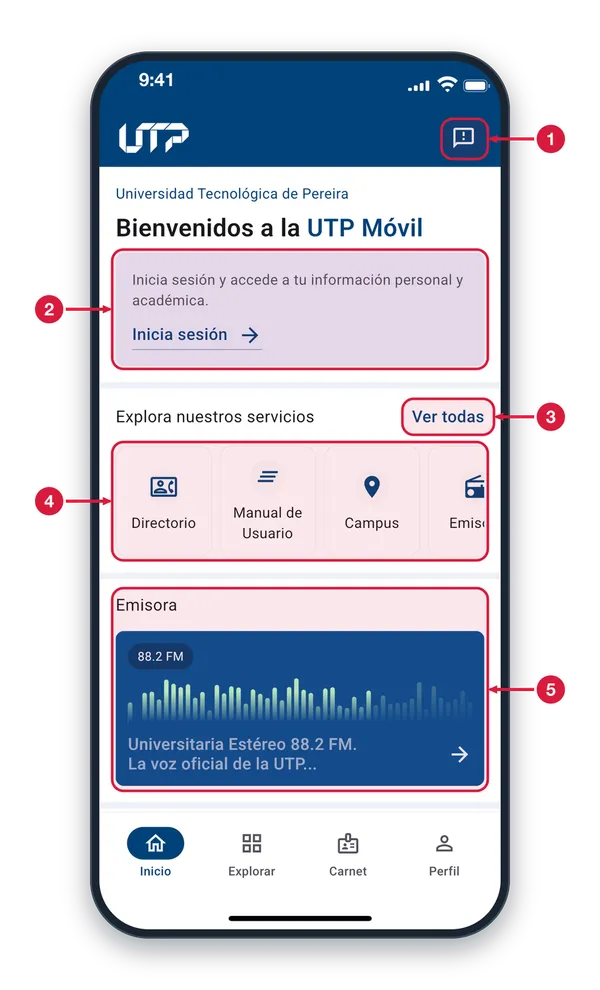
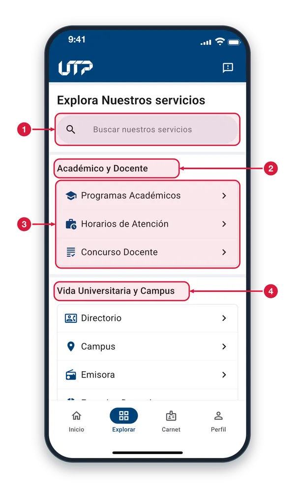
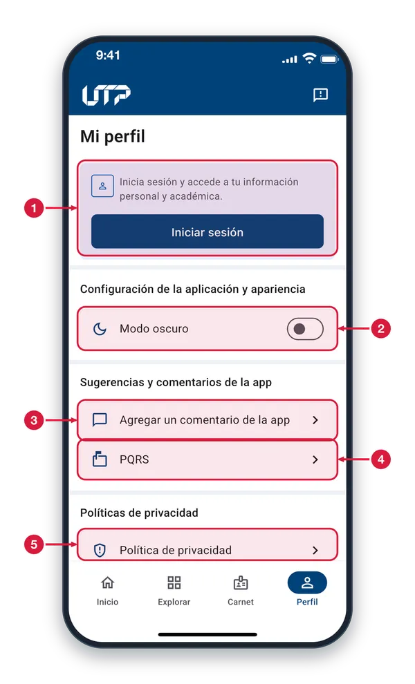

Este manual cubre las principales funcionalidades de la aplicación. Recuerda que la app se actualiza constantemente con nuevas mejoras.
Si tienes dudas o sugerencias, no dudes en usar el módulo de Sugerencias o contactar al equipo de soporte de la universidad.
¡Gracias por usar UTP Móvil!
PERFIL GENERAL
Tu punto de partida como visitante en la app
Al abrir la app sin iniciar sesión, puedes explorar funciones generales como visitante.
La pantalla de perfil muestra las opciones disponibles sin necesidad de tener una cuenta de usuario.
Explorar los módulos públicos
Cambiar entre modo claro y modo oscuro
Iniciar sesión desde Perfil
PERFIL GENERAL · INICIO Y MENÚ
Inicio sin iniciar sesión1 de 3
Pestaña Inicio cuando entras sin cuenta: bienvenida, atajos a servicios públicos y la emisora de la UTP.

Icono de sugerencias Toca este icono para abrir Sugerencias y calificar la app. Aparece arriba a la derecha en Inicio, Explorar, Carnet y Perfil.
Invitación a iniciar sesión Solo aparece si no has iniciado sesión. Toca «Inicia sesión» y se abre la pantalla de inicio de sesión para ver tu información personal y académica.
Ver todas Toca para ir a la pestaña Explorar, donde están todos los servicios disponibles agrupados por tema.
Servicios destacados Atajos a servicios de la UTP. Desliza hacia los lados para ver más y toca una tarjeta para abrir ese servicio.
Emisora Tarjeta de la emisora universitaria. Tócala y se abre la pantalla Emisora, desde donde puedes escucharla.
Explorar sin iniciar sesión2 de 3
Lista de los servicios públicos de la app, agrupados por tema. Se abre con la pestaña Explorar o con «Ver todas» en Inicio.

Buscar servicios Escribe el nombre de un servicio y la lista se filtra mientras escribes. Toca Cancelar para borrar la búsqueda; si nada coincide, aparece «No hay resultados».
Grupo de servicios Los servicios se agrupan por tema, como Académico y Docente. Sin iniciar sesión solo ves los servicios públicos.
Servicios del grupo Cada fila es un servicio. Toca una y se abre su pantalla; el icono ayuda a reconocerla y la flecha indica que se abre otra pantalla.
Más grupos Desliza hacia arriba para ver los demás grupos, como Vida Universitaria y Campus, con sus servicios.
Perfil sin iniciar sesión3 de 3
Pestaña Perfil cuando no has iniciado sesión: te deja entrar a tu cuenta, cambiar el tema y enviar comentarios.

Iniciar sesión Toca «Iniciar sesión» y se abre la pantalla de inicio de sesión, para acceder a tu información personal y académica.
Modo oscuro Toca la fila o el interruptor para cambiar entre tema claro y oscuro. El cambio se aplica al instante y la app lo recuerda.
Agregar un comentario Abre Sugerencias, donde calificas la app con estrellas y escribes tu opinión.
PQRS Abre la página del Sistema PQRS para presentar peticiones, quejas, reclamos, sugerencias o denuncias.
Política de privacidad Abre la política de privacidad de la Universidad, que explica cómo se tratan tus datos personales.